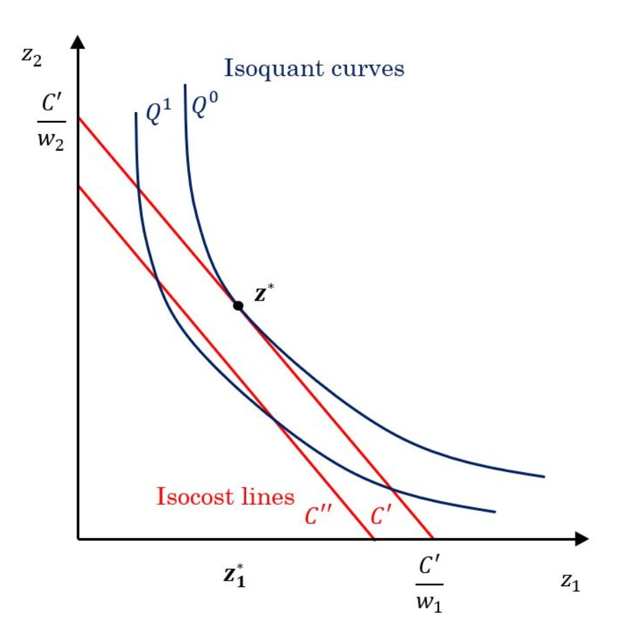
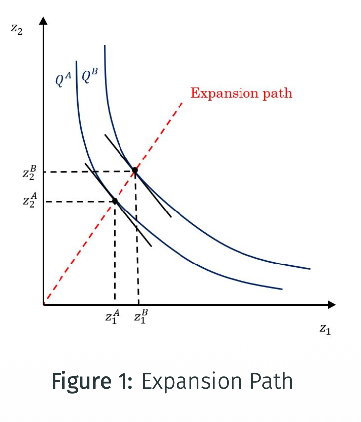
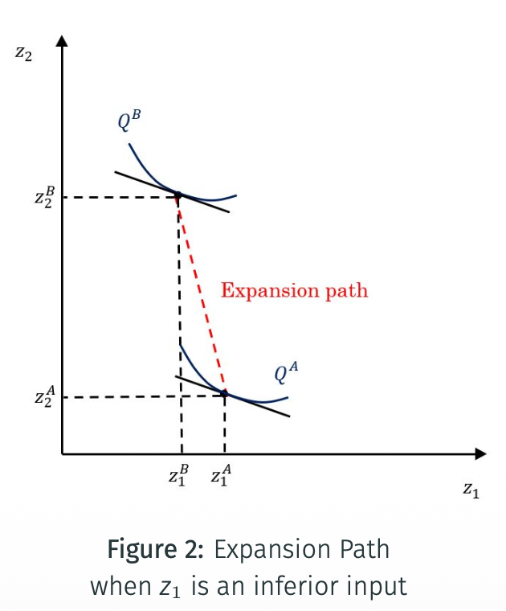
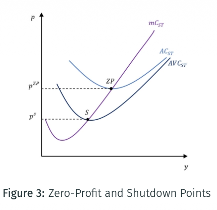
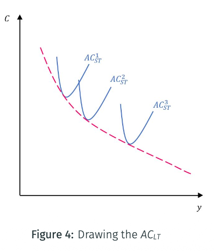
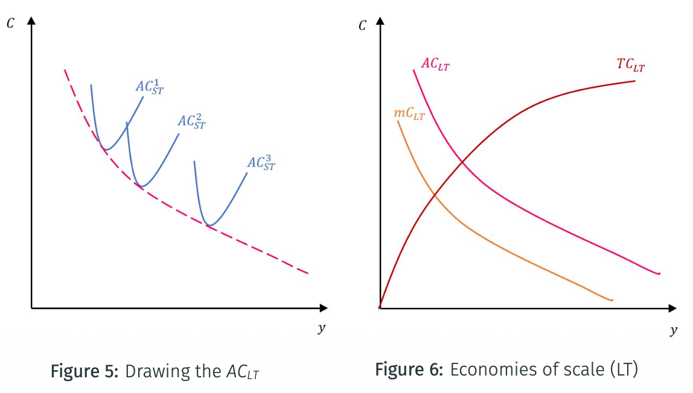
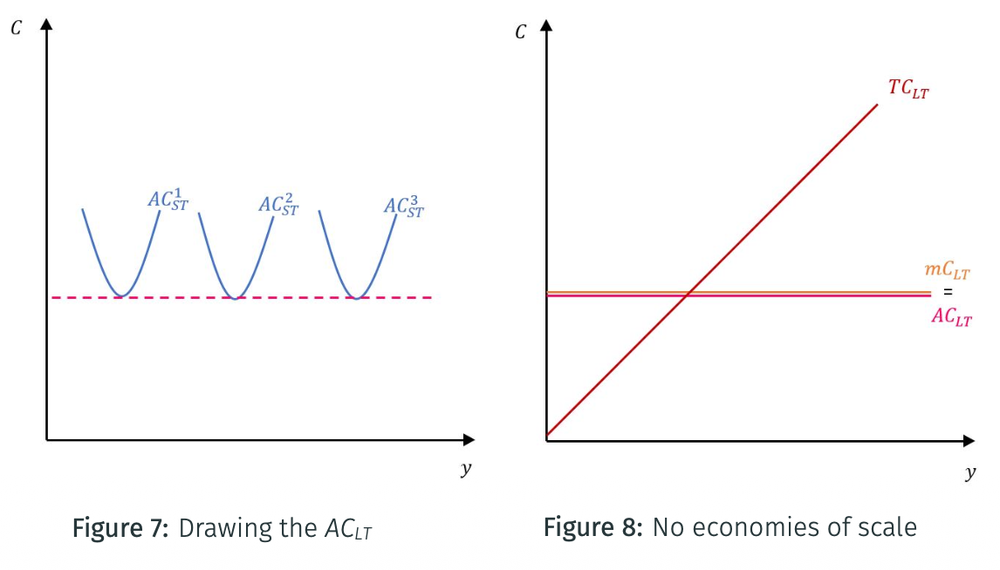
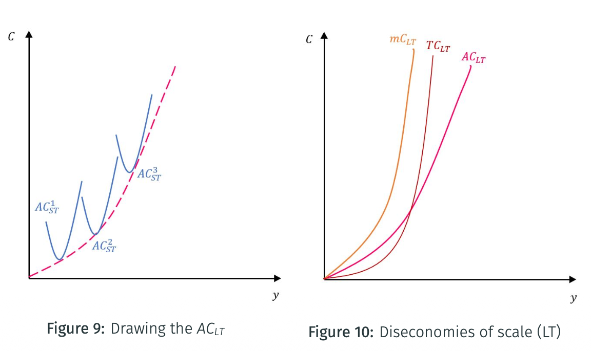
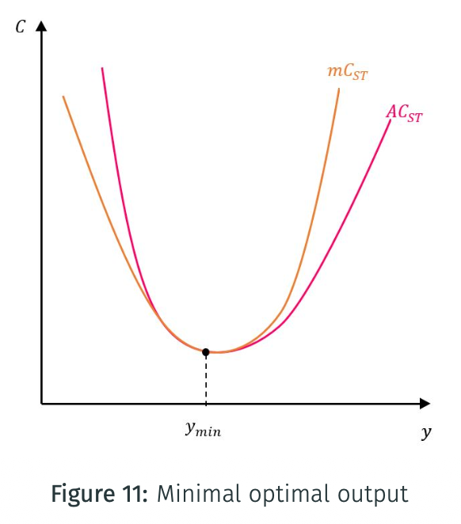

4. Cost-Minimization and Cost Functions
Input choice, short-run costs, and long-run costs.
The Cost Function
The cost function associates to an output target $\bar y$ the minimum cost of producing it:
It is the value function of the cost-minimization problem.
Properties of the cost function
If $f$ is continuous and strictly increasing in $z$, the cost function has the following properties.
At zero output
Cost is zero when $\bar y=0$.
Continuity
The cost function is continuous.
Monotonicity
Cost increases in $\bar y$ and is non-decreasing in $w$.
Homogeneity in $w$
It is homogeneous of degree 1 in $w$: if all input prices double, total cost doubles.
Concavity in $w$
Cost rises more slowly than input prices because the firm can substitute between inputs. The firm never pays more than the weighted average of the two costs.
Cost-Minimization Problem
Assume that $f$ is strictly quasi-concave and twice continuously differentiable. The long-term cost-minimization problem is:
Properties of conditional input demand
Prices scaled together
If $f$ is quasi-concave and twice continuously differentiable, $z_C(w,\bar y)$ is homogeneous of degree 0 in $w$. Scaling all input prices by the same factor changes total cost but not the relative input quantities.
Under constant returns to scale
Producing $\lambda$ times more output requires exactly $\lambda$ times each input, and total cost rises proportionally.
Solving graphically

Choose the lowest isocost for the target isoquant
Isoquant curves show combinations of inputs producing the same output. Isocost lines show combinations of inputs with the same total cost.
For a given output level, the cost-minimizing bundle is the point $z^*$ on the relevant isoquant that lies on the lowest achievable isocost line.
The isocost lines are parallel straight lines because input prices are independent of the quantity of the inputs. An isocost line is defined by:
Tangency condition
Solving the cost-minimization problem means finding the lowest-cost input bundle for a given isoquant. At $z^*$, the slopes are equal:
Solving with a Lagrangian
As for the consumer’s UMP, the producer’s cost-minimization problem can be written with a Lagrangian:
By the Envelope Theorem, the derivative of the value function with respect to a parameter equals the derivative of the Lagrangian with respect to that parameter. Here:
The multiplier $\lambda$ is the rate at which minimum cost increases when the required output $\bar y$ increases.
Link between PMP and CmP
From PMP
The profit-maximization problem gives unconditional input demand $z_\pi(w,p)$. It therefore gives the supply correspondence $y(p,w)=f(z_\pi)$.
Every profit-maximizing input bundle is cost-minimizing for the output it produces.
From CmP
The cost-minimization problem gives conditional input demand $z_C(w,\bar y)$ for a fixed output level.
A cost-minimizing input choice for some output need not maximize profit, unless that output is the profit-maximizing level.
The profit-maximization problem can also be written using the cost function:
The supply correspondence $y(p,w)$ solves this problem. It is the output level at which the profit-maximizing input demand corresponds to the conditional cost-minimizing input demand. This formulation is useful when the cost function is known but the production function is not.
Expansion Path
The expansion path is the locus of cost-minimizing input combinations as output varies. A positive slope means that an increase in output raises both inputs.


Short-Term Properties of the Cost Function
Preamble
Average cost and marginal cost are defined by:
Total cost differs between the short and long term. Consequently, average and marginal costs differ as well.
Short-term total and marginal cost
In the short run, $z_1$ is variable and $\bar z_2$ is fixed. Total cost is:
Average cost can therefore be written as:
Marginal cost and marginal product
Since $w_1$ is given, the marginal cost of producing one more unit of output depends only on the marginal productivity of $z_1$.
Zero-Profit and Shutdown Points
In the short term, the firm prefers to produce no output when its revenues do not cover variable costs. Producing a positive output requires:
The boundary is the shutdown point. If fixed costs are positive, the firm can still produce an output $y>0$ even when profit is negative. The firm begins making profit when:
The corresponding boundary is the zero-profit point.

Read the two points
The shutdown point $S$ is at the minimum of $AVC_{ST}$, at price $p^s$.
The zero-profit point $ZP$ is at the minimum of $AC_{ST}$, at price $p^{zp}$.
Links between $mC$, $AC$, and $AVC$
Why $mC$ cuts averages at their minima
When $mC<AC$, the average is pulled down. When $mC>AC$, the average is pulled up. Thus the $mC$ curve cuts the average curves at their minimum points.
Why $AC$ tends to $AVC$
The gap between average cost and average variable cost becomes smaller as output grows.
Average fixed cost vanishes as output grows
As $y$ tends to $+\infty$, average fixed cost tends to zero. Therefore, $AC$ tends to $AVC$.
Long-Term Properties of the Cost Function
In the long term, total cost is the cost function defined by the cost-minimization problem:
Returns to Scale and Economies of Scale
Returns to scale describe the change in output when all inputs change in the same proportion. Economies or diseconomies of scale describe the change in total cost when output changes in this way.
The elasticity of cost with respect to output is:
It answers: if output increases by 1%, by what percentage does total cost increase?
| Returns to scale | Costs and marginal product | Relationship between AC and MC |
|---|---|---|
| Increasing returns $E>1$ | Economies of scale; marginal product increases; marginal cost decreases; $E^c<1$. | $AC>MC$. |
| Constant returns $E=E^c=1$ | $MC=AC$ and both are constant. | $AC$ is minimized. |
| Decreasing returns $E<1$ | Diseconomies of scale; marginal product decreases; marginal cost increases; $E^c>1$. | $AC<MC$. |
Long-Term Cost and Economies of Scale

Read the lower envelope
Each $AC_{ST}$ curve corresponds to one plant size, or one level of fixed inputs. The long-term average-cost curve $AC_{LT}$ is the lower envelope of all these short-term average-cost curves.
Because all inputs are variable in the long term, it gives the minimum average cost achievable at each output level when plant size and input combination can both be adjusted.

Under economies of scale, the long-term total-cost curve rises at a decreasing rate. Both $AC_{LT}$ and $mC_{LT}$ decrease, with $mC_{LT}<AC_{LT}$.
Long-Term Cost and Constant Returns to Scale

Under constant returns to scale, the minima of the short-term average-cost curves lie on a horizontal $AC_{LT}$. Long-term total cost is a straight line from the origin, and:
Long-Term Cost and Diseconomies of Scale

Under diseconomies of scale, the lower envelope $AC_{LT}$ slopes upward. The long-term $TC_{LT}$, $AC_{LT}$, and $mC_{LT}$ curves increase, with marginal cost rising more steeply.
Back to the Profit Function
In the long term, there is no distinction between variable and fixed costs. The minimum of $AVC$ is therefore the same as the minimum of $AC$: the minimum of $AC$ corresponds to both the shutdown and zero-profit points.
Minimal optimal output

Meaning of $y_{\min}$
The minimal optimal output is the output level from which the firm no longer has economies of scale.